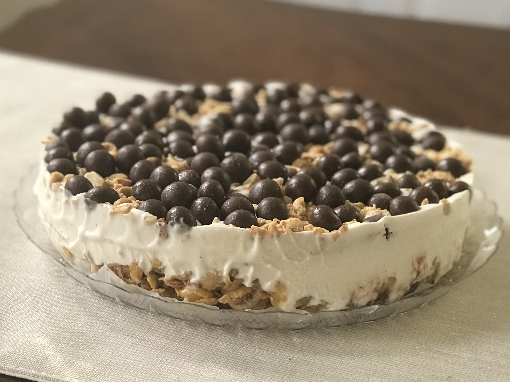

Tin roof sundae pie
Recipe from
allrecipes.com

- Prep: 15 mins
- Additional: 4 hrs
- Total: 4 hrs 15 mins
- Servings: 8
- Yield: 1-9-inch pie
Description
This is an ice cream pie; the combination of the crust and the salty
peanuts makes it one of the best you will ever try.
Ingredients
- 4 cups honey and nut flavor cornflakes cereal
- ½ cup peanut butter
- ½ cup light corn syrup
- 1 quart vanilla ice cream, softened
- ¼ cup chopped salted peanuts
- ½ cup chocolate syrup
Steps
-
Lightly grease a 9 inch pie pan. In a large bowl, mix together cereal,
peanut butter, and corn syrup. Press mixture into greased pie pan.
-
Spread softened ice cream evenly into crust. Top with chopped peanuts.
Freeze until firm, at least 4 hours. Top each slice with chocolate syrup
before serving.
Nutrition Facts
Per Serving: 422 calories; protein 8.8g; carbohydrates
60.7g; fat 18.1g; cholesterol 29mg; sodium 295.1mg.